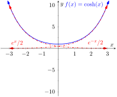
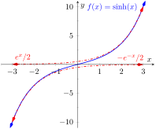
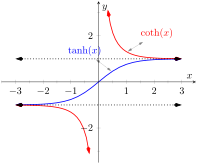
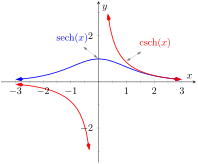
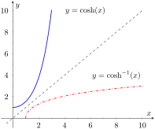
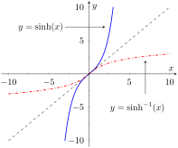
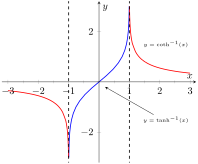
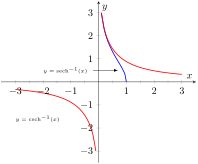

The hyperbolic functions are a set of functions that have many applications to mathematics, physics, and engineering. Among many other applications, they are used to describe the formation of satellite rings around planets, to describe the shape of a rope hanging from two points, and have application to the theory of special relativity. This section defines the hyperbolic functions and describes many of their properties, especially their usefulness to calculus.
These functions are sometimes referred to as the “hyperbolic trigonometric functions” as there are many, many connections between them and the standard trigonometric functions. Figure 6.6.2 demonstrates one such connection. Just as cosine and sine are used to define points on the circle defined by \(x^2+y^2=1\text{,}\) the functions hyperbolic cosine and hyperbolic sine are used to define points on the hyperbola \(x^2-y^2=1\text{.}\)
Figure6.6.2.Using trigonometric functions to define points on a circle and hyperbolic functions to define points on a hyperbola. The area of the shaded regions are included in them.
Subsection6.6.1The Hyperbolic Functions and their Properties
In the graph of \(\cosh(x)\) in Figure 6.6.4.(a), the graphs of \(e^x/2\) and \(e^{-x}/2\) are included with dashed lines. In the graph of \(\sinh(x)\) in Figure 6.6.4.(b), the graphs of \(e^x/2\) and \(-
e^{-x}/2\) are included with dashed lines. As \(x\) gets “large,” \(\cosh(x)\) and \(\sinh(x)\) each act like \(e^x/2\text{;}\) when \(x\) is a large negative number, \(\cosh(x)\) acts like \(e^{-x}/2\) whereas \(\sinh(x)\) acts like \(-e^{-x}/2\text{.}\)
(a)
(b)
Figure6.6.4.Graphs of \(\sinh(x)\) and \(\cosh(x)\)Figure6.6.5.Video presentation of graphs and basic properties of hyperbolic functions
In Figure Figure 6.6.6, notice the domains of \(\tanh(x)\) and \(\sech(x)\) are \((-\infty,\infty)\text{,}\) whereas both \(\coth(x)\) and \(\csch(x)\) have vertical asymptotes at \(x=0\text{.}\) Also note the ranges of these functions, especially \(\tanh(x)\text{:}\) as \(x\to\infty\text{,}\) both \(\sinh(x)\) and \(\cosh(x)\) approach \(e^{-x}/2\text{,}\) hence \(\tanh(x)\) approaches \(1\text{.}\)
(a)
(b)
Figure6.6.6.Graphs of \(\tanh(x), \coth(x), \csch(x)\) and \(\cosh(x)\)
The following example explores some of the properties of these functions that bear remarkable resemblance to the properties of their trigonometric counterparts.
Example6.6.7.Exploring properties of hyperbolic functions.
So \(\frac{d}{dx}\big(\tanh(x) \big) = \sech^2(x)\text{.}\)
The following Key Idea summarizes many of the important identities relating to hyperbolic functions. Each can be verified by referring back to Definition 6.6.3.
Key Idea6.6.8.Useful Hyperbolic Function Properties.
Using the Chain Rule directly, we have \(\frac{d}{dx} \big(\cosh(2x) \big) = 2\sinh(2x)\text{.}\) Just to demonstrate that it works, let's also use the Basic Identity found in Key Idea 6.6.8: \(\cosh(2x) = \cosh^2(x) +\sinh^2(x)\text{.}\)
Just as the inverse trigonometric functions are useful in certain applications, the inverse hyperbolic functions are useful with others. Figure 6.6.(a) shows restriction on the domain of \(\cosh(x)\) to make the function one-to-one and the resulting domain and range of its inverse function. Since \(\sinh(x)\) is already one-to-one, no domain restriction is needed as shown in Figure 6.6.(b). Since \(\sech(x)\) is not one to one, it also needs a restricted domain in order to be invertible. Figure 6.6.(d) shows the graph of \(\sech^{-1}(x)\text{.}\) You should carefully compare the graph of this function to the graph given in Figure 6.6.6.(b) to see how this inverse was constructed. The rest of the hyperbolic functions area already one-to-one and need no domain restrictions. Their graphs are also shown in Figure 6.6.15.
Because the hyperbolic functions are defined in terms of exponential functions, their inverses can be expressed in terms of logarithms as shown in Key Idea 6.6.16. It is often more convenient to refer to \(\sinh^{-1}(x)\) than to \(\ln\big(x+\sqrt{x^2+1}\big)\text{,}\) especially when one is working on theory and does not need to compute actual values. On the other hand, when computations are needed, technology is often helpful but many hand-held calculators lack a convenient\(\sinh^{-1}(x)\) button. (Often it can be accessed under a menu system, but not conveniently.) In such a situation, the logarithmic representation is useful. The reader is not encouraged to memorize these, but rather know they exist and know how to use them when needed.
Figure6.6.13.Finding the inverse of \(f(x)=\sinh(x)\)
Table6.6.14.Domains and ranges of the hyperbolic and inverse hyperbolic functions
Function
Domain
Range
Function
Domain
Range
\(\cosh(x)\)
\([0,\infty)\)
\([1,\infty)\)
\(\cosh^{-1}(x)\)
\([1,\infty)\)
\([0,\infty)\)
\(\sinh(x)\)
\((-\infty,\infty)\)
\((-\infty,\infty)\)
\(\sinh^{-1}(x)\)
\((-\infty,\infty)\)
\((-\infty,\infty)\)
\(\tanh(x)\)
\((-\infty,\infty)\)
\((-1,1)\)
\(\tanh^{-1}(x)\)
\((-1,1)\)
\((-\infty,\infty)\)
\(\sech(x)\)
\([0,\infty)\)
\((0,1]\)
\(\sech^{-1}(x)\)
\((0,1]\)
\([0,\infty)\)
\(\csch(x)\)
\((-\infty,0) \cup (0,\infty)\)
\((-\infty,0) \cup (0,\infty)\)
\(\csch^{-1}(x)\)
\((-\infty,0) \cup (0,\infty)\)
\((-\infty,0) \cup (0,\infty)\)
\(\coth(x)\)
\((-\infty,0) \cup (0,\infty)\)
\((-\infty,-1) \cup (1,\infty)\)
\(\coth^{-1}(x)\)
\((-\infty,-1) \cup (1,\infty)\)
\((-\infty,0) \cup (0,\infty)\)
(a)
(b)
(c)
(d)
Figure6.6.15.Graphs of the hyperbolic functions (with restricted domains) and their inverses
Key Idea6.6.16.Logarithmic definitions of Inverse Hyperbolic Functions.
The following Key Ideas give the derivatives and integrals relating to the inverse hyperbolic functions. In Key Idea 6.6.18, both the inverse hyperbolic and logarithmic function representations of the antiderivative are given, based on Key Idea 6.6.16. Again, these latter functions are often more useful than the former. Note how inverse hyperbolic functions can be used to solve integrals we used Trigonometric Substitution to solve in Section 6.4.
Multiplying the numerator and denominator by \((-1)\) gives: \(\ds \int \frac{1}{x^2-1}\, dx = \int \frac{-1}{1-x^2}\, dx\text{.}\) The second integral can be solved with a direct application of item #3 from Key Idea 6.6.18, with \(a=1\text{.}\) Thus
We should note that this exact problem was solved at the beginning of Section 6.5. In that example the answer was given as \(\frac12\ln\abs{x-1}-\frac12\ln\abs{x+1}+C\text{.}\) Note that this is equivalent to the answer given in Equation (6.6.1), as \(\ln(a/b) = \ln(a) - \ln(b)\text{.}\)
This requires a substitution, then item #2 of Key Idea 6.6.18 can be applied. Let \(u = 3x\text{,}\) hence \(du = 3dx\text{.}\) We have
This section covers a lot of ground. New functions were introduced, along with some of their fundamental identities, their derivatives and antiderivatives, their inverses, and the derivatives and antiderivatives of these inverses. Four Key Ideas were presented, each including quite a bit of information.
Do not view this section as containing a source of information to be memorized, but rather as a reference for future problem solving. Key Idea 6.6.18 contains perhaps the most useful information. Know the integration forms it helps evaluate and understand how to use the inverse hyperbolic answer and the logarithmic answer.
The next section takes a brief break from demonstrating new integration techniques. It instead demonstrates a technique of evaluating limits that return indeterminate forms. This technique will be useful in Section 6.8, where limits will arise in the evaluation of certain definite integrals.
Exercises6.6.3Exercises
Terms and Concepts
1.
In Key Idea 6.6.8, the equation \(\ds \int \tanh(x) \, dx = \ln(\cosh(x) )+C\) is given. Why is “\(\ln\abs{\cosh(x) }\)” not used — i.e., why are absolute values not necessary?
2.
The hyperbolic functions are used to define points on the right hand portion of the hyperbola \(x^2-y^2=1\text{,}\) as shown in Figure 6.6.2. How can we use the hyperbolic functions to define points on the left hand portion of the hyperbola?